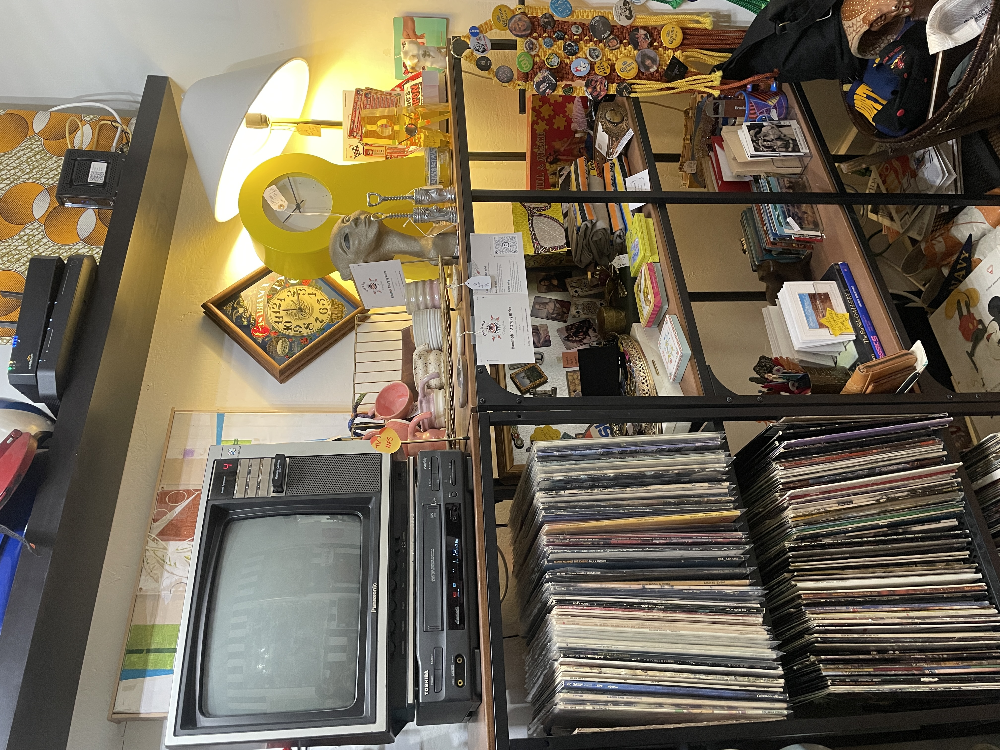

MUSIC MAP
MUSIC MAP
If you know me personally, or even if you've encountered me virtually, you know I have an intense relationship with music. I title this piece “MUSIC MAP,” because like most, one’s journey through music is an evolution. Growing up absorbing the music played in your home, escaping to school and encountering differing music shared with friends, finding your own tastes in music and forming your own opinions-- the relationship with music is never-ending and the ability to widen your scope and discover music that’s new to you is infinite. With that, I would like to share my own journey through music.
I'm told that my mother played The Beatles to me while still in utero even, so naturally, the first song I ever “sang” was “Don’t Let Me Down,” at just two years old. Growing up, music was fundamental to the harmony of the home-- there were vinyl records, cassette tapes and CD’s galore, essentially never a lul in music flowing through the home. Apart from The Beatles, my parents played The Doors, Led Zeppelin, The Rolling Stones, The Who, David Bowie, Bob Dylan, Creedence Clearwater Revival, The Monkees, etc. Heck, my first concert was Crosby, Stills & Nash at just 2.5 years old! In my teenage years, I retained my love for those foundational bands and started adding 1980’s/1990’s bands such as: Depeche Mode, Duran Duran, The Cars, The Smiths, Nirvana and Hole.
Being the old soul that I am, it wasn’t until College, paired with the proliferation of music streaming, that my music world expanded further. In College, it was the first time that I started branching out and encountering music that my parents had absolutely no influence on (and bands they had never heard of). I can remember exactly where I was and what I was doing the first time I heard the Arctic Monkeys (Do I Wanna Know?) and from that one song I was hooked! So hooked in fact that I started collecting several Arctic Monkeys tattoos and obsessing over the lead singer, Alex Turner. The door to my own personal taste had been opened (even if I was a little late to the game!). Diving deeper into the Arctic Monkeys lore led me to other artists, such as The Last Shadow Puppets, Mini Mansions, Queens of the Stone Age, The Black Keys, Cage the Elephant, Interpol, The Strokes, Vundabar and Modest Mouse, to name a few.
Eventually, my passion turned to Jack White and The White Stripes. My dedication to Jack White and anything he produces is unwavering-- for an entire year I only wore red white and black, dyed my hair black and wore peppermints just to embody Meg White! Subscribing to Jack White’s vinyl subscription and business venture, Third Man Records, sparked my interest in vinyl records and actually playing (or attempting to at least) the instruments I was so enthralled with. For about a year I dipped my toes in with electric guitar and drum lessons-- at least I can play The White Stripes catalog on drums! All the while expanding my vinyl collection, becoming a regular patron at Zia Records, and spending all my money on concert tickets. My love for Jack White and similar artists also provides me with a stronger sense of community, even if through a virtual environment. I have met so many good people from collector facebook groups to simply running into other concert goers, something so special to me, connecting with others through a shared love of music.
Always retaining my love for the foundational music I grew up with and of course the artists I picked up on my own, my latest music obsession has sprouted from my discovery of Kid Cudi. I know, hearing about The Beatles and Jack White, how did we get to ending this piece with a rap artist like Kid Cudi? Essentially, that is the message of this blog-- expose yourself to a variety of music and see what sticks-- you might just surprise yourself! Maybe you can relate, but when I encounter a song that literally sends chills across my body and stimulates my ears and mind, I am reminded just how magical and important music is to the soul. So keep listening, keep discovering, keep appreciating your roots and keep moving forward.